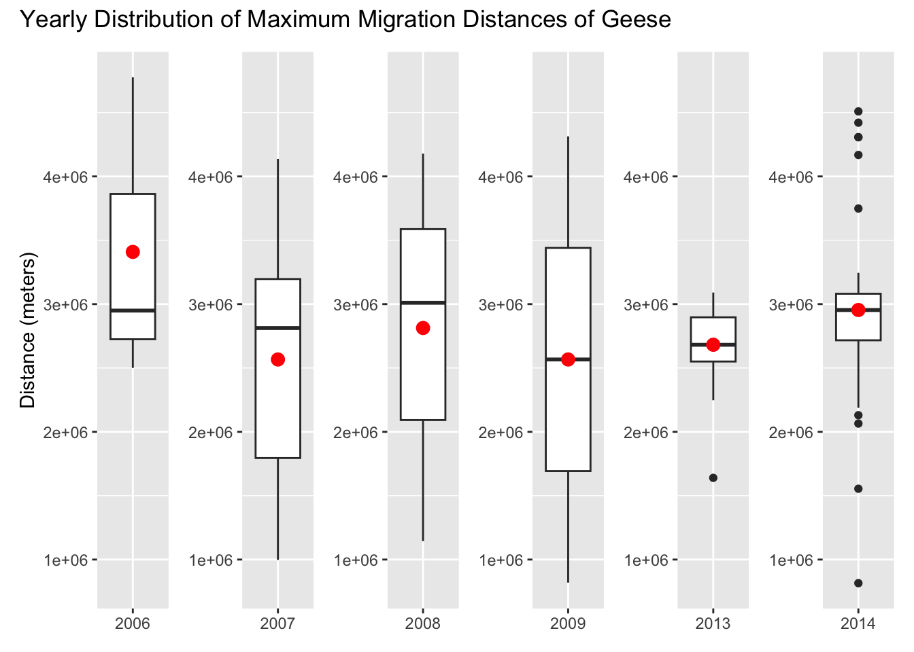

Hundreds of snow geese taking off for migration. Credits: Linda Davidson/The Washington Post
Motivate the Question
Has geese migration distance changed over time?
Understanding the relationship between climate variables and wildlife migration is critical in the context of climate change. Migratory species are often considered indicators of ecosystem health, as they are highly sensitive to environmental changes. Disruptions in their migration patterns could have cascading effects on biodiversity, ecosystem stability, and food webs. As climate change continues to alter temperature, precipitation, and other environmental variables, it is essential to investigate how these changes might influence migration behaviors, including distances traveled.
Previous studies have highlighted how factors like temperature and precipitation affect migration timing, routes, and destinations. These changes may lead to earlier or later migrations, altered paths, or shifts in wintering or breeding grounds. However, less attention has been given to changes in total migration distance, which could reflect significant shifts in species behavior or adaptations to changing conditions. Understanding migration distances over time is crucial, as it may offer insights into the energetic demands of migration, habitat availability, and the resilience of species to environmental stressors.
My goal in this analysis is to assess whether geese migration distances have changed over time and to examine the potential influence of precipitation as a key climate variable. By analyzing data on migration distances from specific years and integrating climatic data where available, I aim to uncover patterns or trends that might signal broader ecological shifts.
Additionally, this study acknowledges some challenges, such as gaps in data across years and potential biases in sample sizes for certain time periods. Recognizing these limitations, the analysis will employ statistical methods like linear regression to evaluate trends and consider the potential impact of precipitation on migration distances. With a better understanding of these patterns, we can contribute to broader efforts to monitor the effects of climate change on migratory species and their ecosystems.
Hypotheses
Based on previous research that describes how environmental factors can influence migration patterns, I believe that there will be a change in geese migration over time. Below shows a table of my two hypotheses, and I will be attempting to determine whether or not they can be rejected.
Hypothesis: There is a change in geese migration distance over time.
Null hypothesis: There is no change in geese migration distance over time.
Analysis Plan
Load in data
Clean and manipulate data
Create boxplots to visualize distribution
Run linear regression model
Visualize linear regression
Analyze results
Data
My data comes from Movebank, a free online database that houses a vast collection of animal tracking data contributed by researchers worldwide. Movebank offers a unique opportunity to study wildlife movement patterns by providing detailed spatial and temporal data for a wide variety of species. My professor, Max Czapanskiy, played a significant role in helping me identify this dataset, exploring the repository to find a species with a consistent and well-documented migration pattern. We settled on geese because their predictable and regular migratory behavior makes them an ideal subject for studying trends over time.
The dataset I selected was originally created for a paper investigating the timing of geese migrations over a time span covering 2006 to 2009, followed by a three-year gap, and then 2013 and 2014. The data include 65 geese that were tagged and tracked across their migration routes, providing information on their movements throughout the year. This spatial data was meticulously documented in the original study, and it includes a visualization of the geese’s migration routes and stopover locations, which helped to inform my understanding of their migration patterns. The following graph comes from their paper.
Migration tracks. Credits: Kölzsch et al., 2016
For my original project proposal, I aimed to build upon the original dataset by incorporating an additional environmental predictor variable—precipitation. I sourced precipitation data from NOAA, selecting a weather station located along the geese’s migration route. My hope was to explore whether precipitation levels might influence migration distances in any meaningful way. However, as I later discovered, the inclusion of this variable presented challenges. The spatial and temporal aspects of the precipitation data did not align well with the migration data, limiting its utility in the analysis.
Analysis
Load in Libraries
Show code
library(tidyverse)
── Attaching core tidyverse packages ──────────────────────── tidyverse 2.0.0 ──
✔ dplyr 1.1.3 ✔ readr 2.1.4
✔ forcats 1.0.0 ✔ stringr 1.5.0
✔ ggplot2 3.4.4 ✔ tibble 3.2.1
✔ lubridate 1.9.2 ✔ tidyr 1.3.0
✔ purrr 1.0.2
── Conflicts ────────────────────────────────────────── tidyverse_conflicts() ──
✖ dplyr::filter() masks stats::filter()
✖ dplyr::lag() masks stats::lag()
ℹ Use the conflicted package (<http://conflicted.r-lib.org/>) to force all conflicts to become errors
Show code
library(here)
here() starts at /Users/kjwong/MEDS/kimberleewong.github.io
Show code
library(tmap)
Attaching package: 'tmap'
The following object is masked from 'package:datasets':
rivers
Show code
library(sf)
Linking to GEOS 3.10.2, GDAL 3.4.1, PROJ 8.2.1; sf_use_s2() is TRUE
Attaching package: 'broom'
The following object is masked from 'package:modelr':
bootstrap
Import Data
# Movebank geese datageese <-read_sf(here("posts/geese_migration/data/Migration timing in white-fronted geese (data from Klzsch et al. 2016)/points.shp"))# NOAA precipitation dataprecip <-read_csv(here("posts/geese_migration/data/precip.csv"))
Rows: 3287 Columns: 8
── Column specification ────────────────────────────────────────────────────────
Delimiter: ","
chr (2): STATION, NAME
dbl (5): LATITUDE, LONGITUDE, ELEVATION, PRCP, SNWD
date (1): DATE
ℹ Use `spec()` to retrieve the full column specification for this data.
ℹ Specify the column types or set `show_col_types = FALSE` to quiet this message.
Clean Data
# Add year column to both datasetsgeese$year <-year(geese$timestamp)precip$year <-year(precip$DATE)# Filter precipitation data to years we have data for geeseprecip <- precip[precip$year %in%c(2006, 2007, 2008, 2009, 2013, 2014), ]# Create new dataset that has the average precipitation per yearmean_precip <- precip %>%group_by(year) %>%summarise(mean_precip =mean(PRCP, na.rm =TRUE))
Filter for Box Plots
# Create new dataframes for each year, so we can make a boxplot for each yearearly_2006 <- geese %>%filter(year ==2006)early_2007 <- geese %>%filter(year ==2007)early_2008 <- geese %>%filter(year ==2008)early_2009 <- geese %>%filter(year ==2009)late_2013 <- geese %>%filter(year ==2013)late_2014 <- geese %>%filter(year ==2014)
Calculate Maximum Distance
In order to make a linear regression model and visualize how migration distances are changing year to year, we’re going to create a new variable. By grouping by tag_ident (which is unique to each goose) and year, and using the max of st_distance, we can measure the distance between the two farthest points where a goose had been tagged that year. We will do this to the entire dataframe and to each year in order to make the boxplots.
`summarise()` has grouped output by 'tag_ident'. You can override using the
`.groups` argument.
Box Plot Visualizations
Show code
# Set y_limits so each y-axis is the same, and it is easier to comparey_limits <-range(geese_group$max_distance, na.rm =TRUE)b2006 <-ggplot(geese_2006, aes(x ="2006", y = max_distance)) +geom_boxplot() +stat_summary(fun = mean, geom ="point", color ="red", size =3) +scale_y_continuous(limits = y_limits) +labs(y ="Distance (meters)") +theme(axis.title.x =element_blank()) # Turn off x-axis labelb2007 <-ggplot(geese_2007, aes(x ="2007", y = max_distance)) +geom_boxplot() +stat_summary(fun = mean, geom ="point", color ="red", size =3) +scale_y_continuous(limits = y_limits) +theme(axis.title.x =element_blank(), # Turn off x-axis labelaxis.title.y =element_blank())b2008 <-ggplot(geese_2008, aes(x ="2008", y = max_distance)) +geom_boxplot() +stat_summary(fun = mean, geom ="point", color ="red", size =3) +scale_y_continuous(limits = y_limits) +theme(axis.title.x =element_blank(), # Turn off x-axis labelaxis.title.y =element_blank())b2009 <-ggplot(geese_2009, aes(x ="2009", y = max_distance)) +geom_boxplot() +stat_summary(fun = mean, geom ="point", color ="red", size =3) +scale_y_continuous(limits = y_limits) +theme(axis.title.x =element_blank(), # Turn off x-axis labelaxis.title.y =element_blank())b2013 <-ggplot(geese_2013, aes(x ="2013", y = max_distance)) +geom_boxplot() +stat_summary(fun = mean, geom ="point", color ="red", size =3) +scale_y_continuous(limits = y_limits) +theme(axis.title.x =element_blank(), # Turn off x-axis labelaxis.title.y =element_blank())b2014 <-ggplot(geese_2014, aes(x ="2014", y = max_distance)) +geom_boxplot() +stat_summary(fun = mean, geom ="point", color ="red", size =3) +scale_y_continuous(limits = y_limits) +theme(axis.title.x =element_blank(), # Turn off x-axis labelaxis.title.y =element_blank())(b2006 | b2007 | b2008 | b2009 | b2013 | b2014) +plot_annotation(title ="Yearly Distribution of Maximum Migration Distances of Geese")

In these box plots the red dot represents the mean. There is noticeable variability in migration distances across years. Some years, 2007 and 2008, have larger interquartile ranges, while others, 2013, have more tightly clustered data. The 2014 data appears to have a few outliers on the lower end.
Linear Regression Model (Year only)
For the first linear regression model, I’m only gonna run the year as the predictor.
year_mod <-lm(max_distance ~ year, geese_group)ggplot(geese_group, aes(x = year,y = max_distance)) +geom_point() +geom_smooth(se =FALSE,method = lm) +theme(aspect.ratio =1) +labs(title ="Linear Regression Model of Maximum Migration for Geese",x ="Year",y ="Max Distance (meters)")
`geom_smooth()` using formula = 'y ~ x'
summary(year_mod)
Call:
lm(formula = max_distance ~ year, data = geese_group)
Residuals:
Min 1Q Median 3Q Max
-2030506 -282246 39621 245984 2060253
Coefficients:
Estimate Std. Error t value Pr(>|t|)
(Intercept) -29660636 66157768 -0.448 0.655
year 16140 32888 0.491 0.625
Residual standard error: 851300 on 75 degrees of freedom
Multiple R-squared: 0.003201, Adjusted R-squared: -0.01009
F-statistic: 0.2409 on 1 and 75 DF, p-value: 0.625
After looking at both the results of the visualization and the summary of the model, it is very much inconclusive. While the graph seems to show an increase in maximum migration distances (albeit very slight), the summary shows that the p-value for the year predictor is 0.625. This is much too high for this variable to be considered signficant. In addition to this, the R-squared value is 0.0032, and this means that the model explains only 0.32% of the variability in migration distances.
Plot Residuals
Let’s plot the residuals to see if there are any blaring red flags about this choice of model.
ggplot(geese_group, aes(x = year, y =resid(year_mod))) +geom_point() +geom_hline(yintercept =0, linetype ="dashed", color ="red") +labs(title ="Residuals of the Linear Model",x ="Year",y ="Residuals") +theme_minimal()
The residuals appear to be randomly distributed along the x-axis (years). This suggests that the relationship between predictors and the response variable is reasonably linear. There seem to be clusters of residuals near certain years, which is likely due to an uneven distribution of data across years. There are residuals that are very large, and these could be outliers.
Add Precipitation to Model
Let’s try adding precipitation to the model to see if we can get a more significant relationship.
merged_data <-merge(geese_group, mean_precip, by ="year", all.x =TRUE)# Make year variable is treated as a categorical variablemerged_data <- merged_data %>%mutate(year =as.factor(year)) precip_mod <-lm(max_distance ~ mean_precip + year, data = merged_data)summary(precip_mod)
Call:
lm(formula = max_distance ~ mean_precip + year, data = merged_data)
Residuals:
Min 1Q Median 3Q Max
-2139000 -216127 17442 295893 1746955
Coefficients: (1 not defined because of singularities)
Estimate Std. Error t value Pr(>|t|)
(Intercept) 7510783 5128234 1.465 0.147
mean_precip -1812342 2057486 -0.881 0.381
year2007 -131332 443555 -0.296 0.768
year2008 113113 488158 0.232 0.817
year2009 -801156 751133 -1.067 0.290
year2013 -148566 297875 -0.499 0.619
year2014 NA NA NA NA
Residual standard error: 852700 on 71 degrees of freedom
Multiple R-squared: 0.05328, Adjusted R-squared: -0.01339
F-statistic: 0.7992 on 5 and 71 DF, p-value: 0.5539
Unfortunately, even after precipitation to the model, none of the predictors’ p-values are small enough to be considered signficant. While the R-squared did increase quite a bit, the adjusted R-squared was practically unchanged.
Conclusion
To sum up our results, in both linear models (first: year as only predictor, second: year as a categorical predictor and mean precipitation as a continous one) there is no significant p-value found. In the first model, the p-value for year as a predictor was 0.625, indicating a 62.5% chance that the result was due to chance. The second model similarly shows p-values that are too high. As a result, I cannot reject the null hypothesis. There are a few possibilities to why this outcme could have occurred. Below describes the limitations of the data. The box plots that were created do show variability throughout the years in maximum migration distance, but a confident relationship cannot be determined.
Limitations of the Data
While the dataset from Movebank offers valuable insights into geese migration patterns, several limitations must be acknowledged, as they could affect the robustness and interpretation of the analysis:
Temporal Gaps in the Data The dataset spans 2006 to 2009 and then skips three years before resuming for 2013 and 2014. This temporal gap introduces potential biases, as it excludes data from years that might have exhibited different migration behaviors due to environmental or ecological changes. Consequently, the uneven time distribution reduces the ability to assess continuous trends over time.
Uneven Sample Size Across Years The number of geese tracked varies significantly between years, leading to imbalances in the dataset. This uneven distribution may skew the results, as years with fewer data points have less statistical weight, potentially masking real patterns or exaggerating anomalies in years with more extensive data coverage.
Lack of Comprehensive Environmental Variables While the inclusion of precipitation data was a step toward understanding environmental influences, the variable proved challenging to integrate effectively. The NOAA station data was limited in its spatial relevance to the geese’s migration routes and lacked temporal precision. Other critical environmental factors, such as temperature, wind patterns, or habitat changes along the migration path, were not included, which limits the ability to fully understand the drivers behind migration distances.
Potential Impact of External Factors The original study mentioned that some geese were lost during hunting seasons. This human-induced mortality could affect migration data by reducing sample sizes or influencing the observed migration distances of tagged individuals.
Simplification of Migration Distance Calculation The migration distance was calculated as the maximum distance traveled by each goose during the year, assuming that this represented the total migration length. This approach does not account for potential deviations, stopovers, or detours in the migration path, which might lead to underestimation or overestimation of actual migration effort.
Bias Toward Surviving Individuals The data inherently focuses on geese that completed their migrations and excludes individuals that may have died en route or failed to migrate. This survivorship bias could paint an incomplete picture of the migration patterns and the challenges faced by the population.
Limited Geographic and Population Scope The dataset tracks a specific subset of the goose population in a defined geographic area. Findings from this subset may not be generalizable to other populations or regions where geese face different environmental pressures or migratory challenges.
Acknowledging these limitations is essential for interpreting the results and framing conclusions. Future studies could aim to fill data gaps, integrate additional environmental variables, and explore alternative methods for calculating migration distances to gain a more comprehensive understanding of the factors influencing geese migration.
References
Data:
Citation:
Geese Migration Data
Kölzsch, A., Müskens, G. J. D. M., Kruckenberg, H., Glazov, P., Weinzierl, R., Nolet, B. A., & Wikelski, M. (2016). Towards a new understanding of migration timing: slower spring than autumn migration in geese reflects different decision rules for stopover use and departure. Oikos, 125(10), 1496–1507. https://doi.org/10.1111/oik.03121
Precipitation Data
Climate Data Online (CDO), National Climatic Data Center (NCDC). (n.d.). Www.ncei.noaa.gov. https://www.ncei.noaa.gov/cdo-web/search
Citation
BibTeX citation:
@online{wong2024,
author = {Kimmy Wong},
title = {Shifts in {Geese} {Migration}},
date = {2024-12-13},
url = {https://kimberleewong.github.io/posts/geese_migration/geese_migration_blog.html},
langid = {en}
}